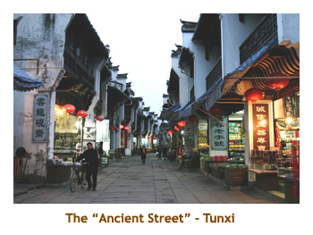
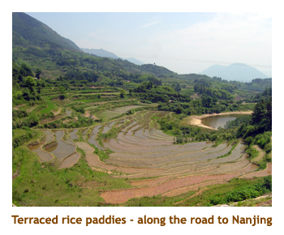

[ Home ] [ Travel ] [ Photography ] [ Pets ] [ Games] [ Rowing] [ Physics ]


A Visit to Mainland China - Part 3
Travel
Cruises
Past Cruises (Diaries)
Future Cruises
Rogues Galleries
Land Trips
Diaries (Land Trips)
Hawai'i - Big Island - 04'01
Hawai'i - Maui - 05'02
Hawai'i - Big Island - 04'03
Hawai'i - Kaua'i - 09'04
Hawai'i - Big Island - 04'06
Hawai'i - Maui - 04'06
Mainland China - 05'07
Phoenix, Arizona - 12'07
Greek Isles - 05'08
Hawai'i - Kaua'i - 09'08
Hawai'i - Big Island - 09'09
Hawai'i - Maui - 05'12
Hawai'i - Big Island - 04'13
Ireland - 08'13
Mexico - Cancun 11'13
France/Belgium/Lux 07'15
Hawai'i - Big Island - 05'17
England / Wales - 06'17
Hawai'i - Big Island - 09'19
Photography
Cameras
Underwater
Pets
Tara
Blackie
Whitey
Muffy
Ollie
Rusty
Fluffy
Rufus&Dufus
Games
Rowing
Physics
Day 16 (May 20) - Hangzhou to Huangshan (Tunxi)
Clothing update: None of us wore shorts in northern China, as Chinese frown on them. However, when we left Xi'an, I decided to break out the shorts. Several others followed suit. I've worn them every day since. To heck with the gawkers. Actually I think the Chinese are actually admiring (and envying) my muscular, shapely legs.
I watched the Chelsea / Man U FA cup final last night, which didn't end until almost midnight. As a result, I actually awoke at 6:40, so didn't get to breakfast until 7. Great breakfast. All of the hotels seem to have the best banana bread. Yumm!
We boarded the bus at 8:30 and did a tour around Hangzhou. I don't know what
happened, but we had a new local guide, Terry. Yvonne was gone.
Our first stop was at the tomb
of Yue Fei, a great Chinese general who attacked the Jin to reunify China during the Song
Dynasty. He was so successful in his campaigns, that the Song emperor became afraid
of him and had him killed. In retribution, the people later placed sculptures of four of the people
involved with his murder at the gravesite. Visitors used to spit on the statues or slap them,
but the statues are now protected behind iron fences. Yue Fei is still revered in China.
 Then it was off to West Lake (Xi Lu) and a boat trip around
the lake. It is a beautiful lake with many bridges and pagodas. There were lots of people there as it was
Sunday. West Lake has long been considered one of the scenic wonders of China,
covering over 3 square miles. Originally the lake was an inlet off the estuary of the
Qiangtan River, becoming a lake when the river began to silt up in the 4th century.
The lake had a tendancy to flood, so several dykes were built, including the Bai and
Su causeways. The Su causeway takes its name from the Song dynasty poet, Su Dongpo,
who served as governor of Hangzhou. The boat trip was very interesting. The water was
very yellow with silt, and I think I heard from Yvonne that the lake was only about 2 meters deep.
After leaving the boat we walked along a long, busy pathway over the causeway and
back to the bus.
Then it was off to West Lake (Xi Lu) and a boat trip around
the lake. It is a beautiful lake with many bridges and pagodas. There were lots of people there as it was
Sunday. West Lake has long been considered one of the scenic wonders of China,
covering over 3 square miles. Originally the lake was an inlet off the estuary of the
Qiangtan River, becoming a lake when the river began to silt up in the 4th century.
The lake had a tendancy to flood, so several dykes were built, including the Bai and
Su causeways. The Su causeway takes its name from the Song dynasty poet, Su Dongpo,
who served as governor of Hangzhou. The boat trip was very interesting. The water was
very yellow with silt, and I think I heard from Yvonne that the lake was only about 2 meters deep.
After leaving the boat we walked along a long, busy pathway over the causeway and
back to the bus.
Then we drove to a tea plantation. We saw how they harvested the tea leaves and then dryed them. We were shown how to tell the various qualities of spring and summer teas by sight, smell and taste. I was a failure and could only tell them apart by their price. There were lots of tea fields up and down the hillsides.
Then we went for lunch. Again, I didn't think it was the greatest - the cuisine in northern China was much better. Most things are served in a soup or broth and nothing loses it's head. Fish, chicken, etc - all come complete with head and eyeballs. Figure this out - rice is only grown in southern China, but we weren't served rice here. Every meal in northern China came with rice. Weird!
Then we boarded the bus again for a 4 hour ride to Tunxi (Huangshan City) in the Huang Shan (Yellow Mountains). China is certainly a land of contrasts. In the cities, you see stores selling Gucci, Polo, etc., auto dealers selling Ferrari's, Porsches, million dollar condos, etc. It is like any modern city in North America. However, when you get out into the country things are radically different. Our trip took us through some hilly countryside. There were small fields everywhere. The government owns all the land, and farmers are assigned 0.2 of an acre each. We saw many farmers (and their families) out in the fields. No machinery here, it's all done by hand. Winter wheat has just matured so they were cutting and threshing (ie. banging it on the side of a bin) and then burning the stalks. All by hand! Others were flooding the wheat fields and transplanting rice from nursery crops. Two crops a year on the same land - winter wheat and rice. It must be a hard, basic life for the farmers.
The only "automation" we saw was using water buffalo to pull the ploughs in the rice
paddies. Others were using hand hoes to route furrows in the rocky soil. Tedious hard
work! We saw other unusual crops. For example, we saw fields of mulberry bushes. Not
really a crop but used for the silk industry. The silk worms eat the mulberry leaves and
then build their silky cocoons.
 We passed numerous towns of maybe 1,000 or 2,000 people. There were paved streets, but only pedistrians and bicycles (with the odd motor bike). The peasants seem to ride their bikes to the fields and have nowhere else to go.
We arrived in Tunxi about 5:30 and were given a couple of hours to clean up for dinner. Dinner was at a Chinese restaurant a short distance from the hotel. The food was excellent this time. A couple of the dishes were pretty spicy, but I really enjoyed it.
After dinner (9 PM) some of us ignored the bus and headed into the "ancient street"
(Lao Jie) on foot.
It was a very long, winding street with wonderful shops lining each side. There were
almost no other peopleand the shop keepers didn't hassle us at all. The shops were
all very interesting - wood and stone carvings, caligraphy shops, art galleries, food
stores, etc. The shops were very old and the street was cobbled and for pedestrians
(and bikes) only. I went into a chopstick store and they had a wonderful selection at all
prices. The caligraphy shops were interesting with paint brushes, special inks, rice
paper, etc. At one shop a girl was washing and stretching silk cocoons, and making
silk stuffing for duvets. It was about a 20 minute walk back to the hotel, all along a
riverside walkway. The crescent moon was out and it was still very warm.
Day 17 (May 21) - Up the Mountain to Huang Shan Xihai
I woke up early and it was down to the breakfast shop at 6:30. Everyone was in for a shock. There was no fresh fruit, no cereal, no yoghurt, and only one juice (orange juice) which tasted like water. It was strictly Chinese food! Lots of folks upset, but this has been our only limited breakfast. All the others have been outstanding.
We headed off on the bus about 8:30. Our first stop was at the Unesco World
Heritage site of Hongcun - a Chinese village dating to 1131 AD, not far from the
village of Yixian. The buildings are mainly from the late Ming
and Qing dynasties (1600's), It is known as a "village in a Chinese painting". The
village is laid out in the shape of a water buffalo (using a little imagination!)
and is watered by a network of canals that feed the Moon Pond and South Lake.
The lakes represent the buffalo's stomach, while the canals represent the intestines.
The causeways and bridges are the buffalo's legs.
From the parking lot we walked along the river in front of the village. As we walked along, a farmer was coming towards us followed by his water buffalo. I actually had to step aside to let the buffalo pass. That's the closest I had ever been to the huge animal.
We crossed the river into the village via a causeway and a small bridge.
It was quite a large village of one and two story
buildings, with very narrow passageways through the town. In the center was a
small pond. The buildings are now inhabited by artisans of various types, and a
large group of budding artists were spread throughout the town working
on their watercolour masterpieces. We visited a
vegetable and meat market with strange vegetables and even stranger meat
parts. It was quite hot there, temperatures were supposed to be 32 or 33.
After the village, we drove to the base of Huang Shan (Yellow Mountain) for lunch. Along the way, we stopped by the side of the road to watch some farmers and their water buffalo in the fields. I got some good pictures of them hard at work. I don't know how they manage to work in the heat day after day. Back to lunch! The restaurant was very busy. They first sat us indoors at typical "lazy susan" tables. Then they decided to move us outdoors to the outside tables. The tables were filthy, with beer bottles and cigarette packages strewn on the ground. And it was very hot. Yuck! Then they moved us back inside again to a private room that was very nice indeed. There we had a wonderful lunch. Lots of rice and other good stuff this time!
After lunch we drove to the cable car that would take us up the mountain - about 5000 feet. The cable cars were huge and held about 100 people. There were just 2 cars, one going up and one coming down. I'm not sure why, but we had to wait quite a while to board the cable car. There were a lot of people waiting, so our group got split up over two cars. At the top we stepped into refreshing cool air. The sky was sunny and the view was spectacular. We had about a 1 hour walk (with stops) up and down pathways to get to our hotel. All the food, excess bags, building materials, etc are packed up from the bottom by "yoke on the shoulder" porters. Wouldn't want that job! They even had sedan chairs for people who wanted to be carried around! We were given some free time to relax or do more hiking. Most of us headed off to see more spectacular views.
Dinner was at 7:00 and was excellent. The hotel was simple (a 3 star
hotel), but it was clean and comfortable. The rooms all had twin beds (which
some people grumbled about) and there was no internet. Some of us were
getting up for the sunrise the next morning, so I went to bed right after dinner
(8:30 or so). We had to be up by 4 AM and leave at 4:30 to hike to a good
spot for viewing the 5:11 AM sunrise.
Day 18 (May 22) - A Drive to Nanjing
I woke up at 3:30 this morning, so didn't chance going back to sleep. We met in the lobby at 4 and headed out with our flashlights. The sunrise was quite good, especially with the tremendous mountain view. There were lots of people at the site - Chinese, Japanese, and us. There are at least 5 hotels on the top of the mountain and they all seemed to be full. It was supposed to be quite cold in the morning and the hotel provided nice puffy blue parkas. However, I headed out in shorts and a sweatshirt, and ended up taking off the sweatshirt. It was probably about 12 or 13 degrees.
After the sunrise, we hiked back to the hotel and lounged around for our
7:30 breakfast and for the rest of our sleepy head calssmates to appear.
This was the first breakfast that hasn't been a buffet. We were served at the
table and had rice crispies, toast and jam, and a plate of bacon and scrambled
eggs. I really missed having my usual feed of fresh fruit and yoghurt, but it was
still quite good.
After breakfast we hiked about 1/2 hour to another gondola that went down (and up) a different slope of the mountain. We stopped at several view points looking out over the mountains and valleys. It really was spectacular up on the mountain. The cool air was really refreshing too.
The cable car entrance was not too busy. Again the cars held about 100 people, so our group all made it into the same cable car. Only a few can sit and the rest hang from ceiling handles like a rush hour bus. It really is a spectacular view as the mountain slopes are very steep.
Exiting the cable car was like stepping into a furnace. Back to 24 degrees
again. We were now heading to Nanjing - a 5 hour bus ride away. Instead of
stopping for lunch, Lois had preordered box lunches for us which we picked
up from a local hotel. Then it was off to Nanjing.
Once again we travelled through miles of hilly countryside, with terraced
rice and vegetable fields in the valleys. We passed through many small
villages with new and old houses, and dirt streets and some paved streets.
The farmers were out in their fields in the intense heat, planting, ploughing,
threshing, carrying stuff around. All back breaking work. There are definitely
2 Chinas. If you are lucky enough to be one of the 40% born in the city, you
have a chance at a good job, a nice apartment, a car, a chace to travel through
the country, etc. However, if you are one of the unlucky 60% born in the country
(where having 2 water buffalo is considered to be a sign of great wealth), you
work every day sunrise to sunset scratching out a bare existance. It was
humbling to be driving by these hard working people in our air conditioned bus.
 We arrived at our hotel in Nanjing about 3. It is a gorgeous hotel - probably the best we've stayed in yet. The bedroom / sitting room is huge, with a sofa and coffee table area, a bar and a computer desk area. The bathroom is also huge with a separate tub and shower. There is a walk in closet with a sitting area! Pretty nice.
We headed out for dinner at 6:30. Once again we had an excellent
Chinese dinner. The short ribs were exeptional. After dinner we went for a
long walk around the hotel area. This is the first hotel that was in a seedier
part of the city. The road into the hotel was under reconstruction as well,
which made it seem more primitive. However, there were lots of people wandering
around, so we felt really safe. We walked by lots of small shops and a couple
of large hotels. Very interesting! Then it was back to the hotel for the night.
Day 19 (May 23) - A Day in Nanjing
A note on the teddy bears: Before I left for China, I had decided to take something representative of Canada to hand out to people that I met in China. I wanted to take Vancouver 2010 Olympic pins, but discovered that you had to buy them at $9 each. I ended up going to the dollar store and getting a dozen small teddy bears and teddy moose that had "Canada" and a red maple leaf embroidered on them. The had small clips on them (for key rings?) which I could use to clip them on my backpack so they dangled seductively from my pack (two at a time). I had to cut off the little white tags as they said "Made in China". Anyway, I thought that it would be children that wanted the bears, but not so. It was always adults (or teens) that wanted them. Mainly teenage girls who would giggle when they asked. I'm down to my last two bears now. Some of my classmates thought it was an excellent idea and planned to do so themselves on their next trip. It took them a while to figure out that I had a backpack full of bears, as when I give one or two away, suddenly I had 2 more hanging from my pack.
I also took with me a 8 1/2 X 11 plasticized map of
the world that I carry in my backpack. We have met other travelers who don't speak
English and can point out where we each live. Also Chinese locals have asked
where we live and we can point it out. Most people don't know much about Canada
or where Calgary is.
Notes on Nanjing: Nanjing has a population of about 6 million, and is the capital of
Jiangsu province. It is located near the coast, on the banks of the Yangzi River,
close to the magnificant Purple Mountain. This city of lakes is still enclosed within
a grand city wall. In Chinese, "bei" means north, "nan" means south and "jing"
means capital city. Hence, Beijing is the "Northern Capital" and Nanjing is the
"Southern Capital". Nanjing was the capital of several kingdoms up to 220 AD.
Later, it was China's capital under the early Ming Dynasty (1300's) and later yet
the capital of the 19th century Taiping Heavenly Kingdom and the first Chinese
Republic under Dr. Sun Yat-sen and later Chiang Kai Shek. "Nanjing" is in Mandarin,
and is called "Nanking" in Cantonese. On a notorious note, Nanjing is know as "one
of the three great furnaces of China". That's referring to the summer temperatures,
not the industrialization.
As usual, breakfast was at 6:30. We were now back to our normal Chinese / American buffet breakfast with lots of fresh fruit, yoghurt and banana bread. I also had a made to order omelette with everything in it. It was a great breakfast.
It had rained overnight, and then started pouring with rain about 7:30. We boarded
the bus with our unbrellas about 8:30 and headed out for the day. The first place we
went to was the government buildings of the Chinese Nationalist Party from the 1920's.
This was the centre of Dr. Sun Yat Sen's party, and the home of Chiang Kai Shek
(in fact called the "Chiang Kai Shek Presidential Offices").
from here, Chiang Kai Shek commanded a purge of the Chinese communists and
Soviet advisors. The rooms have been decorated with period furniture restoring
how it looked in the 1920's. One of the main level rooms was a converted bomb
shelter.The buildings fortunately survived the Cultural Revolution of the 1960's.
After that we went to visit the Dr. Sun Yat Sen Mausoleum (outdoors), where he is buried (Zhongshan Ling). Dr. Sun Yat Sen, who was tolerant of the communists, is today revered as the father of nationalist China. Chiang Kai Shek, on the other hand, hunted down and killed some 30,000 communists, so is not at all popular in mainland China. The mausoleum and grounds are huge. Dr. Sun Yat Sen died in 1925 and a competition was held to design his tomb. The winner was Y. C. Lu, a graduate of Cornell University School of Architecture. The tomb is approached up a long marble stairway of 392 steps and comprises a square hall with a lifesize marble statue of the Doctor. Behind the statue is a door leading to a round domed building that contains his sarcophagus inset into the floor. Behind the tomb building is a garden area with flowers and trees.
On the way back to meet the group for lunch, I paused at a concession stand where
they had a cooler with Coke and Pepsi. I asked the lady for a Coke and she handed me a
Pepsi. So, I said "Pepsi" and she put it back and handed me a Coke. I think I'm beginning
to speak Chinese!
Fortunately the rain had stopped by now, but it was very warm and extremely humid. All of us were just as wet as if had still been raining. What a sticky day!
Tennis note: While waiting for our bus near the ubiquitous souvenir shops,
two vendors were demonstrating a tennis ball on a very long elastic string (just
my type - the ball always comes back). They were taking turns hitting the ball
with tennis racquets. I decided that dispite the heat and humidity, I would give
it a try. Well, my old squash skills must have come to the
front as I was able to hit the ball just fine
and had a good game with the vendor. James, our "guide in training"
even took my picture. If I wasn't sweating before the game, I sure was after!
After the mausoleum (and string tennis), we headed to an air conditioned restaurant for lunch. Boy, did that feel air conditioning good! Once again it was a wonderful lunch. Every meal we seem to have one or two local dishes that we haven't had before. Very nice!
Then we headed to the Yuhuatai Revolutionary Martyr's Museum that is a huge
memorial to the communist fighters that died from Chiang Kai Shek's army.
According to legend, Yuhuatai is where a 5th century monk gave a sermon that
was so moving that flowers rained down from the sky. Chinese visitors still
collect the coloured pebbles that are found here. Sadly, the [ark became an execution
ground during the Chinese revolution (1927 - 1949), and thousands lost their lives
here. The Martyr's memorial consists of nine gigantic 30m high figues in typical Soviet
realist style. The
sculptures are typical western communist motifs of peasants breaking their chains of
bondage. Not very Chinesey at all. The afternoon was still overcast, but very, very humid.
After the Museum, we were supposed to go to the Nanjing Massacre (Rape of Nanking) Museum. This Museum documents the attrocities done by the occupying Japanese forces during the WWII. It was a holocaust similar to that in Nazi Germany, and over 400,000 innocent Chinese died horrible deaths. However, the museum was closed for renovations. I was just as glad as the museum is very depressing.
Instead, we went to the remains of the government examination center. Government
exams were started in Sui Dynasty times (581 - 618 AD). People wanting to join the civil
service at the municipal, provincial or federal level had to write and pass a series of
examinations. The site we visited was once many acres in size and had rows and rows
of cubicles where 20,000 students sat for 3 days writing their exams. This was done twice
a year. All that remains of the buildings (thanks to the Cultural Revolution) is a proctor's
building and a few short rows of cubicles. Very interesting.
We arrived back at the hotel again about 4 PM just as it started to rain again. Everyone was glad to walk into the A/C hotel and headed to their rooms to shower and clean up.
We left for dinner at 6:30. We had an interesting bus ride through narrow alleys,
making cars back up and drivers shout. Lots of honking too! Dinner was very good.
After dinner, some of us jumped off the bus part way home and visited a humungous
night market. We wandered around for about an hour. It was mostly the same old stuff we
had seen in the previous cities. One thing different was several stalls selling pet dogs, cats
and rabbits. I don't think we had seen this before in other night markets. The animals were
in tiny cages. At one stall our professor bought a Mahjong set. I had seen many very
nice sets on our travels and was sorely tempted, but I already have a Mahjong set and
who needs two? We grabbed a cab to get back to the hotel and arrived
about 9:30. Time for bed.
Day 20 (May 24) - Nanjing to Shanghai
We were up for our normal 6:30 breakfast and onboard the bus by 8 AM. It was raining slightly and very dark and misty. The drive from Nanjing to Shanghai took almost 4 hours. It was quite industrialized along the highway, so no one minded the reduced visibility. I'm sure glad that we had the sunshine for our 2 drives several days ago through the farmlands and countryside. All of the highways we have been on have been toll roads. We are constantly going through toll booths on our trips.
We arrived in Shanghai about noon. What a huge, bustling city. (Bustling means traffic jams!). The freeways are amazing with arial roads 7 or 8 stories high. We where midway up some of the office towers and could look way down to the streets below. The interchange ramps are the most complicated I've ever seen. In Shanghai you have to have special vehicle plates to use the arial highways. Out of towners must use the slower surface roads.
We headed directly to our restaurant. It was the nicest restaurant we had been to yet,
with gorgeous red mahogany tables and chairs. Once again we sat at tables for 8 or
10 with a lazy susan in the center. The lunch was excellent.
After lunch we did 2 sightseeing stops. The first was to the Jade Buddha Temple, the most famous of Shanghai's many temples. It contains two jade Buddha statues that originally came from Burma. Next, we visitied the Yu Gardens and Bazaar. This is a huge complex with a bazaar surrounding a beautiful Chinese garden. In the garden is a much photographed foot bridge that zigzags across a small pond.
Then we returned to the hotel about 4:30 and had till 5:30 to clean up. Once again we are at a top notch hotel. At 5:30 we boarded the bus and headed out for dinner. This restaurant was very nice and had silk embroidered pictures hung around the room. They were Chinese scenes and also copies of famous western masterworks. They were for sale, and the one I checked out was $5,000 US. A bit rich for me. Dinner was great. After dinner we were taken to a theatre for a performance of the Chinese acrobats. They were awesome. The tumbling, juggling and gymnastics were superb. They finished with 5 motorbikes in the steel mesh cage. I'd seen this on TV before but it was amazing live.
Back to the hotel by 9:30. To bed soon as we have another early start tomorrow as we
visit some more sites in the city.
Day 21 (May 25) - A Day in Shangai
We were up early again, breakfast at 6:30. We were on the bus at 8 ready to see Shanghai. Shanghai is difficult to see, not because it's so large, but because it is so smoggy. The downtown would be so beautiful, but buildings more than a block away melt into the smog and appear as grey or black lumps.
Our first stop was at "The Bund". This is the strip of European buildings (early 1900's) lining
the west side of the Huangpu River. This was the financial center of the Enlish, American, French
and German concessions during the early 20th century. The river was very misty and the smog
made the buildings look quite drab. However, we had a nice walk along the river.
After wandering the Bund, we hopped back in the bus and headed off to a silk factory. We've been very lucky this trip in that factories (ie. shopping) has played a very small role. On one of the flights we were intermingled with a group of 60 from a Uniworld tour. One fellow was complaining to me that the whole trip seemed to be factories and shopping. Not so for us! Anyways, the silk factory was very interesting. We learned that the cocoons are either single or double. Each cocoon is spun from a single thread of silk. If the cocoon is single, then the thread can be unwound (yielding about 1.5 Km of silk!). If double, then it can't. So, the double cocoons are stretched as is to make a filling for a duvet or comforter. The single cocoons are combined in groups of about 8 and unwound/twisted into a strong silk thread.
At the back of the factory was a large showroom with all sorts of silk products. I bought
an embroidered silk placement for my Mom. A lot of our group bought one or more silk
comforters which were squished flat to make them easier to carry on the flight home.
This was one factory tour that I enjoyed.
Then we drove to the Shanghai Museum. It is a wonderful museum covering culture and art from 10,000 BC to the end of the Qing Dynasty (1912). The museum has 4 floors with a lot to see. This museum is organized differently than the one in Xi'an, which was chronological. The Shanghai Museum is organized by medium. There are separate rooms for bronzes, pottery, calligraphy, furniture, paintings, etc, We were only given 1 hour, and I had to move very quickly to cover all 4 floors. Fortunately the museum wasn't too busy so one could see a lot even in the short time. One very interesting exhibit displayed coins and paper currency from 2,000 BC to the present. I'm not sure if all the items displayed in the museum are original. There were several items that were identical (to the best of my memory) to items we saw at the Shaanxi Museum in Xi'an. For example, one large sculpture was of a trader and his camel. I'm positive that I saw exactly the same thing in Xi'an. One of them must be a copy! The museum had a very interesting gift/book shop. A number of our group purchased interesting books.
Then we drove to a restaurant for lunch. Once again, lunch was delicious. I think I am
actually going to miss Chinese food when I get back to Calgary.
After lunch we drove to a small building that was the site of the First National Congress of the Chinese Communist Party. Lots of history and stuff about Mao Zedong and his buddies. It doesn't seem to be an important monument for the Chinese people, a result of the overwhelming resentment of Mao's policies and particularly the Cultural Revolution. The rooms had been refurnished in period furniture and life size figures of the congress attendees sat around a large table. I can understand why the congress met in this location as there was a large Starbucks only a block away!
We returned to the hotel about 3 PM so that we could clean up for dinner. We seem to spend a lot of time cleaning up. We are a dirty lot! Rather than cleaning up, I decided to work on my journal. I can clean up when I get back to Calgary!
At 6 PM we headed off to a restaurant for dinner - probably Chinese. The plan was to
do outr long awaited gift exchange before eating dinner. I think I mentioned
earlier about purchasing my gift in Beijing. I was ready! It's one of those "pick from the pile
or steal someone else's" gift exchange. I don't think anyone realized how long it would take
us to do 32 gift selections! We were sat in a large circle and handed numbers. I think we
spent 2 hours before the dust had settled and the final gift was stolen / opened. The
staff seemed to enjoy the hilarity as much as we did. It was good fun. The gifts were
wonderful - people had put a lot of thought into their purchases. I ended up with
a set of musical balls. Something to do with good health. Finally, we were done
and got to eat dinner. Dinner was wonderful.
After dinner the bus headed back to the hotel. Some of us jumped ship along the way and walked down Nanjing Road to the pedestrian mall area. The guide had suggested that it was only a short walk to the mall, but I think we walked for over 1/2 hour to get there. It was a long way! It was dark out and the buildings were all lit up in flashing neon. There were lots of people strolling around the mall. There was even a live jazz band and people were ballroom dancing. Four of us stopped into a McDonald's for ice cream cones. They were great! That was our first visit to a fast food outlet in China.
Most of the group decided to cab it back
to the hotel, but Donna and I decided to walk back. We retraced our steps back along Nanjing
Road, and turned down Maoming Road towards the hotel. A good part of the road was under
construction so we had to walk over uneven dirt and crumbling brick. A poor choice of
route, but how was I to know? We did make it back to the hotel safe and sound though.
Another great day!
Day 22 (May 26) - Traces of my Ancestors
Today is the last day of our China trip. While I'm looking forward to getting home again, I know I will miss the country, the food and the camaraderie of the group. but the whole trip has been just great.
Today was a morning on our own. I had my own special plans. I wanted to visit the home of my ancestors. My great aunt and great uncle lived in Shanghai for 21 years, from 1920 to 1941. My great uncle worked for P&O Steamship Lines which had an office in Shanghai. These were years of turmoil in China, seeing the war between the CCP and the KMT, and the occupation by the Japanese. My father also lived for a year in Shanghai, around 1930 and worked in a lithography factory. While the depression was raging in North America, there were still jobs to be had in China.
My cousin lived his early years in Shanghai and now lives in Victoria. He was able to provide me
with a description of the row housing where they lived and how to find it. He had been back
to visit in 1990 and
things were pretty well as he remembered.
It was about a mile or so walk from our hotel to the Jing'an Temple on West Nanjing Road (formerly known as Bubbling Well Road). The housing could be found just 1 block east of the temple. As I was walking along Nanjing road, I was diverted across the street by some uniformed policemen. There I encountered several vans full of police and even 2 tour buses full of police. There were also plain clothes police wandering through the crowd that had gathered. I have no idea what it was all about, but presumeably some notable was in town.
Continuing on, I arrived at the area where the housing should have been. Progress had obliterated
all traces of the homes. There was now a huge shopping complex right where my relatives used to live.
across the street were two high rise buildings, with construction cranes working on several more. I took
some photos of the area and then continued a further block west to the Jing'an Temple. It had been
rebuilt in 2002 (or so) and looked brand new.
I crossed the street southwards to Jing'an Park. This is where the original bubbling well and foreigner's cemetery used to be. I wandered all through the park but couldn't find any trace of them. It was a beautiful park with lots of trees, open grassy spaces and a pond with lotus flowers. Once again there were numerous groups doing Tai Chi and other rythmic exercises. One area had wonderful birdsongs coming from the trees. Not having noticed many birds in Shanghai (pollution?), I went in for a closer look. It turned out that people had hung small cages in the trees with singing birds inside. I guess that's one way to get singing birds in the trees!
Fronting
the park was another shopping complex and an outdoor amphitheater. There was a corporate
rah-rah meeting taking place in the amphitheater for the AstraZeneca Pharmeceutical Co., whoever they
are.
On the return trip home I took a side road to see some of the older shops and buildings. There were lots of people sitting on the edge of the street selling fruits and vegetables. Some had bikes with their produce in a large box on the back of the bike. One group of vendors had live chickens and would kill and clean them right in front of you. At least you would know that the chicken was fresh! All along the street were small shops selling various items. Some were restaurants (sort of!). I stopped into one very interesting bookstore and almost bought a book or two. It was hot and I was thirsty, so I stopped at a small grocery store and bought a Coke. The standard price (in the older sections of town) seemed to be 3 yuan for an ice cold 600 ml plastic bottle of Coke (or Pepsi). That's only about 45 cents Cdn. Not bad!
Then it was time to head back to the hotel and get ready for the flight home. I really enjoyed
my morning on my own and felt quite comfortable walking around the city. I had memorized the
street names beforehand and had no trouble finding my way back even though I took a very
circuitious route. I was kind of sad to be leaving China and took my time getting back to the hotel.
Finale (May 26) - Heading Home
 We had to have our bags out by noon. We hopped into the bus for the last time and headed off
to the airport. This was the second time to the airport today for some of the class. Why? There is a
much hyped MagLev train from Shanghai to the airport that takes just 8 minutes and reaches about
430 mph. Several of the class decided to spend their "morning on your own" doing a round
trip via the MagLev train. We checked in to the flight and settled down to wait for the departure.
It was lunch time and the only meal not included in the travel package. I found a place selling
sandwiches and Häagen-Dazs ice cream bars. Fortunately the airport prices were quite
inflated so that I used up all of my Chinese money right down to the last yuan.
We had to have our bags out by noon. We hopped into the bus for the last time and headed off
to the airport. This was the second time to the airport today for some of the class. Why? There is a
much hyped MagLev train from Shanghai to the airport that takes just 8 minutes and reaches about
430 mph. Several of the class decided to spend their "morning on your own" doing a round
trip via the MagLev train. We checked in to the flight and settled down to wait for the departure.
It was lunch time and the only meal not included in the travel package. I found a place selling
sandwiches and Häagen-Dazs ice cream bars. Fortunately the airport prices were quite
inflated so that I used up all of my Chinese money right down to the last yuan.
The flight to Vancouver was long but uneventful. Takeoff had been delayed a half hour or so,
so we had a very tight connection time in Vancouver. We had to claim our bags and go through
Canadian customs. Customs was very busy, but fortunately they had a special line for
passengers with tight connections. We ran to our Calgary flight with about 20 minutes to spare.
The flight to Calgary was fine and we arrived in Calgary on time. Marjorie was there to meet me. She
seemed upset which was strange as I had been away on my own before. However, it
turned out that she had to have one of our elderly cats (Muffy) put down that morning. Poor
kitty aside, it was great to be back home.